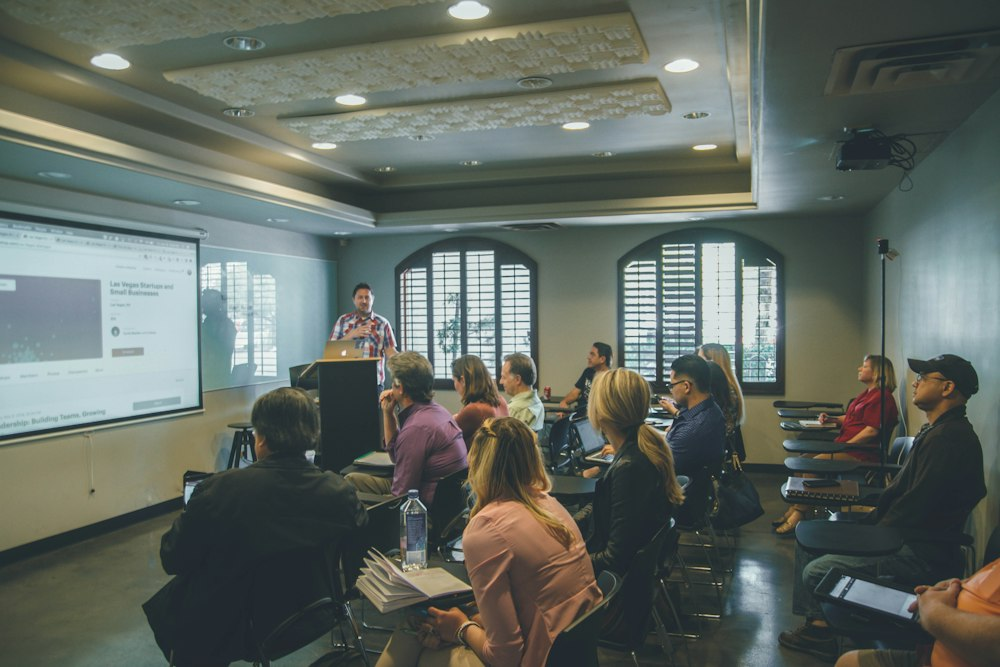

Menos tiempo en tareas repetidas.
Más tiempo para enseñar.
Un espacio pedagógico vivo para diseñar situaciones de aprendizaje, automatizar la evaluación formativa y dinamizar tus clases con herramientas abiertas y fáciles de usar.

Herramientas para cada momento de tu clase
Elige una necesidad pedagógica y continúa desde ahí. Cada herramienta funciona directamente en tu navegador de forma gratuita.
Tareas competenciales
Diseña situaciones de aprendizaje, retos auténticos y proyectos conectados con la vida real según el marco curricular.
Abrir herramientaVisualizador de notas
Explora resultados del grupo y convierte los datos de evaluación en gráficos y porcentajes claros para la toma de decisiones.
Abrir herramientaWarm-up de aula
Genera preguntas provocadoras, dinámicas de entrada y actividades rompehielos para empezar cada sesión con energía.
Abrir herramientaIdeas para clase
Desbloquea nuevas dinámicas, enfoques interdisciplinares y recursos prácticos para cualquier nivel educativo.
Abrir herramientaLaboratorio y simulador
Prepara guías de prácticas, hipótesis de laboratorio y simulaciones para aprender haciendo y extraer conclusiones rigurosas.
Abrir herramientaProgramaciones didácticas
Estructura objetivos, saberes básicos, criterios de evaluación y secuenciación temporal adaptada a tu grupo.
Abrir herramientaExámenes y pruebas
Construye pruebas de evaluación variadas, preguntas competenciales con solucionario y criterios de corrección transparentes.
Abrir herramientaFeedback formativo
Redacta comentarios personalizados, orientaciones constructivas y mensajes de refuerzo positivo que impulsan el aprendizaje.
Abrir herramientaGamificación
Crea narrativas, insignias, misiones cooperativas y dinámicas de juego con una intencionalidad pedagógica clara.
Abrir herramientaComunicación
Prepara circulares claras, correos a familias, informes de tutoría y mensajes efectivos para el equipo docente.
Abrir herramientaBuenas ideas educativas creadas para compartir.
Explora 225 aplicaciones educativas abiertas, incluyendo los repositorios de Curiousminds123 (Ana H. Iranzo) y aportaciones docentes de la comunidad Vibe Coding Educativo, todas con autoría declarada y licencias de compartir igual.

Reconocimiento · Compartir Igual
Tecnología con intención pedagógica.
EDOCENTIA reúne herramientas diseñadas para ahorrar tiempo administrativo y mecánico sin perder de vista lo esencial: el criterio docente, la conexión humana con el alumnado y el rigor pedagógico.